Introduction to spatial statistics
Types of spatial analyses
In this training, we will discuss three types of spatial analyses: point pattern analysis, geostatistical models and models for areal data.
In point pattern analysis, we have point data representing the position of individuals or events in a study area and we assume that all individuals or events have been identified in that area. That analysis focuses on the distribution of the positions of the points themselves. Here are some typical questions for the analysis of point patterns:
Are the points randomly arranged or clustered?
Are two types of points arranged independently?
Geostatistical models represent the spatial distribution of continuous variables that are measured at certain sampling points. They assume that measurements of those variables at different points are correlated as a function of the distance between the points. Applications of geostatistical models include the smoothing of spatial data (e.g., producing a map of a variable over an entire region based on point measurements) and the prediction of those variables for non-sampled points.
Areal data are measurements taken not at points, but for regions of space represented by polygons (e.g. administrative divisions, grid cells). Models representing these types of data define a network linking each region to its neighbours and include correlations in the variable of interest between neighbouring regions.
Stationarity and isotropy
Several spatial analyses assume that the variables are stationary in space. As with stationarity in the time domain, this property means that summary statistics (mean, variance and correlations between measures of a variable) do not vary with translation in space. For example, the spatial correlation between two points may depend on the distance between them, but not on their absolute position.
In particular, there cannot be a large-scale trend (often called gradient in a spatial context), or this trend must be taken into account before modelling the spatial correlation of residuals.
In the case of point pattern analysis, stationarity (also called homogeneity) means that point density does not follow a large-scale trend.
In a isotropic statistical model, the spatial correlations between measurements at two points depend only on the distance between the points, not on the direction. In this case, the summary statistics do not change under a spatial rotation of the data.
Georeferenced data
Environmental studies increasingly use data from geospatial data sources, i.e. variables measured over a large part of the globe (e.g. climate, remote sensing). The processing of these data requires concepts related to Geographic Information Systems (GIS), which are not covered in this workshop, where we focus on the statistical aspects of spatially varying data.
The use of geospatial data does not necessarily mean that spatial statistics are required. For example, we will often extract values of geographic variables at study points to explain a biological response observed in the field. In this case, the use of spatial statistics is only necessary when there is a spatial correlation in the residuals, after controlling for the effect of the predictors.
Point pattern analysis
Point pattern and point process
A point pattern describes the spatial position (most often in 2D) of individuals or events, represented by points, in a given study area, often called the observation “window”.
It is assumed that each point has a negligible spatial extent relative to the distances between the points. More complex methods exist to deal with spatial patterns of objects that have a non-negligible width, but this topic is beyond the scope of this workshop.
A point process is a statistical model that can be used to simulate point patterns or explain an observed point pattern.
Complete spatial randomness
Complete spatial randomness (CSR) is one of the simplest point patterns, which serves as a null model for evaluating the characteristics of real point patterns. In this pattern, the presence of a point at a given position is independent of the presence of points in a neighbourhood.
The process creating this pattern is a homogeneous Poisson process. According to this model, the number of points in any area \(A\) follows a Poisson distribution: \(N(A) \sim \text{Pois}(\lambda A)\), where \(\lambda\) is the intensity of the process (i.e. the density of points per unit area). \(N\) is independent between two disjoint regions, no matter how those regions are defined.
In the graph below, only the pattern on the right is completely random. The pattern on the left shows point aggregation (higher probability of observing a point close to another point), while the pattern in the center shows repulsion (low probability of observing a point very close to another).
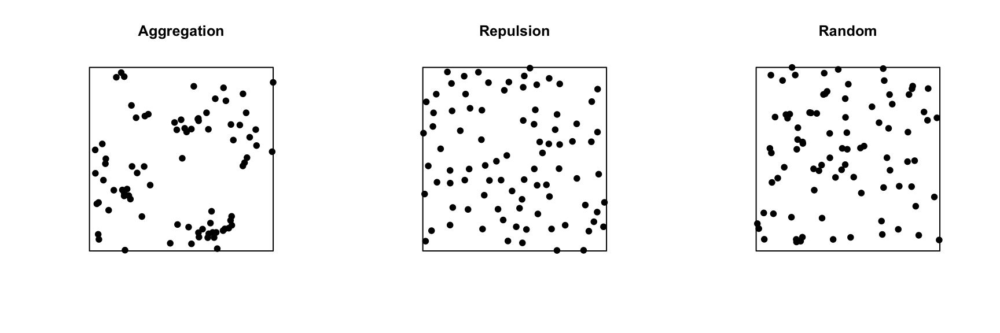
Exploratory or inferential analysis for a point pattern
Several summary statistics are used to describe the characteristics of a point pattern. The simplest is the intensity \(\lambda\), which as mentioned above represents the density of points per unit area. If the point pattern is heterogeneous, the intensity is not constant, but depends on the position: \(\lambda(x, y)\).
Compared to intensity, which is a first-order statistic, second-order statistics describe how the probability of the presence of a point in a region depends on the presence of other points. The Ripley’s \(K\) function presented in the next section is an example of a second-order summary statistic.
Statistical inferences on point patterns usually consist of testing the hypothesis that the point pattern corresponds to a given null model, such as CSR or a more complex null model. Even for the simplest null models, we rarely know the theoretical distribution for a summary statistic of the point pattern under the null model. Hypothesis tests on point patterns are therefore performed by simulation: a large number of point patterns are simulated from the null model and the distribution of the summary statistics of interest for these simulations is compared to their values for the observed point pattern.
Ripley’s K function
Ripley’s K function \(K(r)\) is defined as the mean number of points within a circle of radius \(r\) around a point in the pattern, standardized by the intensity \(\lambda\).
Under the CSR null model, the mean number of points in any circle of radius \(r\) is \(\lambda \pi r^2\), thus in theory \(K(r) = \pi r^2\) for that model. A higher value of \(K(r)\) means that there is an aggregation of points at the scale \(r\), whereas a lower value means that there is repulsion.
In practice, \(K(r)\) is estimated for a specific point pattern by the equation:
\[ K(r) = \frac{A}{n(n-1)} \sum_i \sum_{j > i} I \left( d_{ij} \le r \right) w_{ij}\]
where \(A\) is the area of the observation window and \(n\) is the number of points in the pattern, so \(n(n-1)\) is the number of distinct pairs of points. We take the sum for all pairs of points of the indicator function \(I\), which takes a value of 1 if the distance between points \(i\) and \(j\) is less than or equal to \(r\). Finally, the term \(w_{ij}\) is used to give extra weight to certain pairs of points to account for edge effects, as discussed in the next section.
For example, the graphs below show the estimated \(K(r)\) function for the patterns shown above, for values of \(r\) up to 1/4 of the window width. The red dashed curve shows the theoretical value for CSR and the gray area is an “envelope” produced by 99 simulations of that null pattern. The aggregated pattern shows an excess of neighbours up to \(r = 0.25\) and the pattern with repulsion shows a significant deficit of neighbours for small values of \(r\).
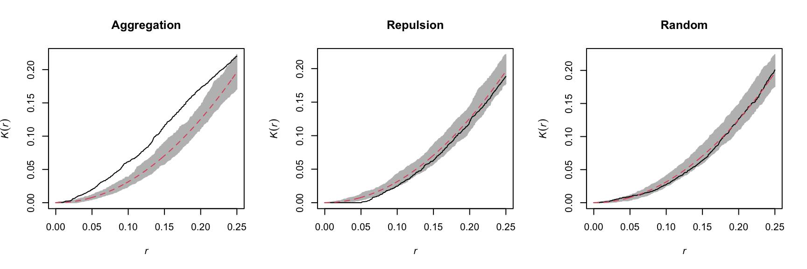
In addition to \(K\), there are other statistics to describe the second-order properties of point patterns, such as the mean distance between a point and its nearest \(N\) neighbours. You can refer to the Wiegand and Moloney (2013) textbook in the references to learn more about different summary statistics for point patterns.
Edge effects
In the context of point pattern analysis, edge effects are due to the fact that we have incomplete knowledge of the neighbourhood of points near the edge of the observation window, which can induce a bias in the calculation of statistics such as Ripley’s \(K\).
Different methods have been developed to correct the bias due to edge effects. In Ripley’s edge correction method, the contribution of a neighbour \(j\) located at a distance \(r\) from a point \(i\) receives a weight \(w_{ij} = 1/\phi_i(r)\), where \(\phi_i(r)\) is the fraction of the circle of radius \(r\) around \(i\) contained in the observation window. For example, if 2/3 of the circle is in the window, this neighbour counts as 3/2 neighbours in the calculation of a statistic like \(K\).
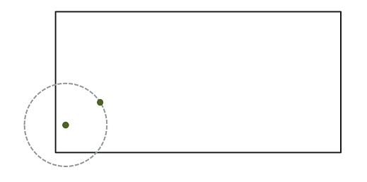
Ripley’s method is one of the simplest to correct for edge effects, but is not necessarily the most efficient; in particular, larger weights given to certain pairs of points tend to increase the variance of the calculated statistic. Other correction methods are presented in specialized textbooks, such as Wiegand and Moloney (2013).
Example
For this example, we use the dataset semis_xy.csv, which represents the \((x, y)\) coordinates for seedlings of two species (sp, B = birch and P = poplar) in a 15 x 15 m plot.
x y sp
1 14.73 0.05 P
2 14.72 1.71 P
3 14.31 2.06 P
4 14.16 2.64 P
5 14.12 4.15 B
6 9.88 4.08 BThe spatstat package provides tools for point pattern analysis in R. The first step consists in transforming our data frame into a ppp object (point pattern) with the function of the same name. In this function, we specify which columns contain the coordinates x and y as well as the marks, which here will be the species codes. We also need to specify an observation window (window) using the owin function, where we provide the plot limits in x and y.
library(spatstat)
semis <- ppp(x = semis$x, y = semis$y, marks = as.factor(semis$sp),
window = owin(xrange = c(0, 15), yrange = c(0, 15)))
semis
Marked planar point pattern: 281 points
Multitype, with levels = B, P
window: rectangle = [0, 15] x [0, 15] unitsMarks can be numeric or categorical. Note that for categorical marks as is the case here, the variable must be explicitly converted to a factor.
The plot function applied to a point pattern shows a diagram of the pattern.
plot(semis)
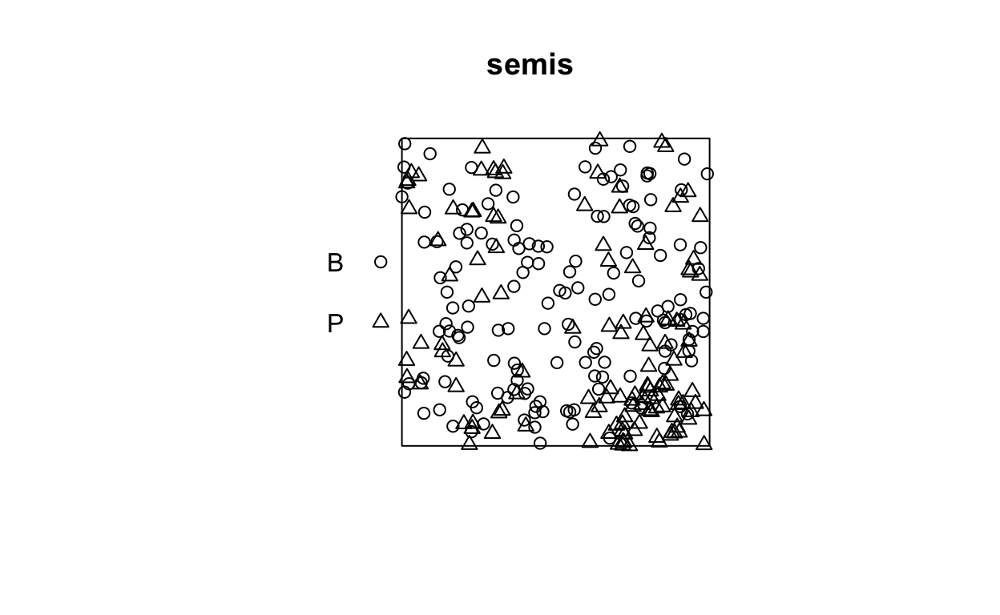
The intensity function calculates the density of points of each species by unit area (here, by \(m^2\)).
intensity(semis)
B P
0.6666667 0.5822222 To first analyze the distribution of each species separately, we split the pattern with split. Since the pattern contains categorical marks, it is automatically split according to the values of those marks. The result is a list of two point patterns.

The Kest function calculates Ripley’s \(K\) for a series of distances up to (by default) 1/4 of the width of the window. Here we apply it to the first pattern (birch) by choosing semis_split[[1]]. Note that double square brackets are necessary to choose an item from a list in R.
The argument correction = "iso" tells the function to apply Ripley’s correction for edge effects.
k <- Kest(semis_split[[1]], correction = "iso")
plot(k)
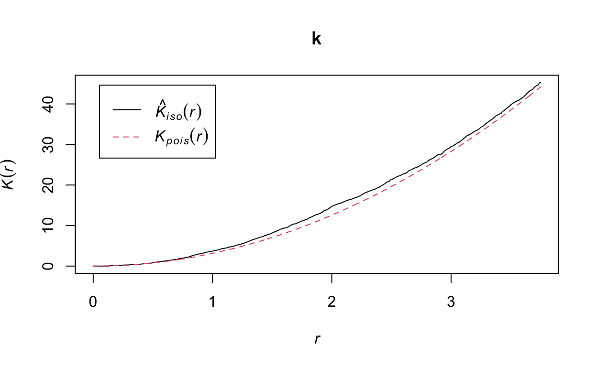
According to this graph, there seems to be an excess of neighbours for distances of 1 m and above. To check if this is a significant difference, we produce a simulation envelope with the envelope function. The first argument of envelope is a point pattern to which the simulations will be compared, the second one is a function to be computed (here, Kest) for each simulated pattern, then we add the arguments of the Kest function (here, only correction).
plot(envelope(semis_split[[1]], Kest, correction = "iso"))
Generating 99 simulations of CSR ...
1, 2, 3, 4, 5, 6, 7, 8, 9, 10, 11, 12, 13, 14, 15, 16, 17, 18, 19, 20, 21, 22, 23, 24, 25, 26, 27, 28, 29, 30, 31, 32, 33, 34, 35,
36, 37, 38, 39, 40, 41, 42, 43, 44, 45, 46, 47, 48, 49, 50, 51, 52, 53, 54, 55, 56, 57, 58, 59, 60, 61, 62, 63, 64, 65, 66, 67, 68, 69, 70,
71, 72, 73, 74, 75, 76, 77, 78, 79, 80, 81, 82, 83, 84, 85, 86, 87, 88, 89, 90, 91, 92, 93, 94, 95, 96, 97, 98, 99.
Done.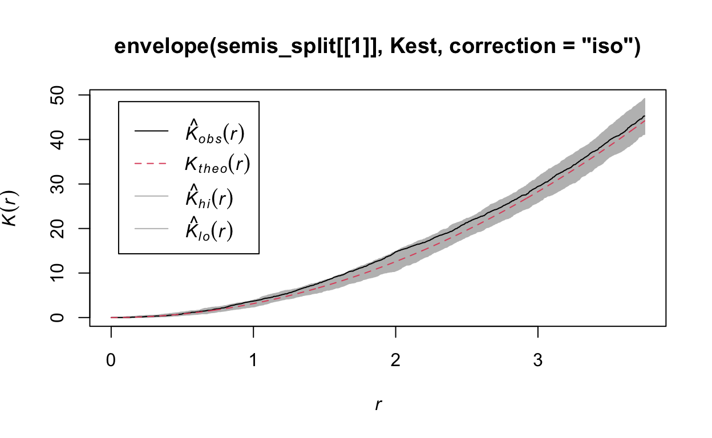
As indicated by the message, by default the function performs 99 simulations of the null model corresponding to complete spatial randomness (CSR).
The observed curve falls outside the envelope of the 99 simulations near \(r = 2\). We must be careful not to interpret too quickly a result that is outside the envelope. Although there is about a 1% probability of obtaining a more extreme result under the null hypothesis at a given distance, the envelope is calculated for a large number of values of \(r\) and is not corrected for multiple comparisons. Thus, a significant difference for a very small range of values of \(r\) may be simply due to chance.
Exercise 1
Looking at the graph of the second point pattern (poplar seedlings), can you predict where Ripley’s \(K\) will be in relation to the null hypothesis of complete spatial randomness? Verify your prediction by calculating Ripley’s \(K\) for this point pattern in R.
Effect of heterogeneity
The graph below illustrates a heterogeneous point pattern, i.e. it shows an density gradient (more points on the left than on the right).
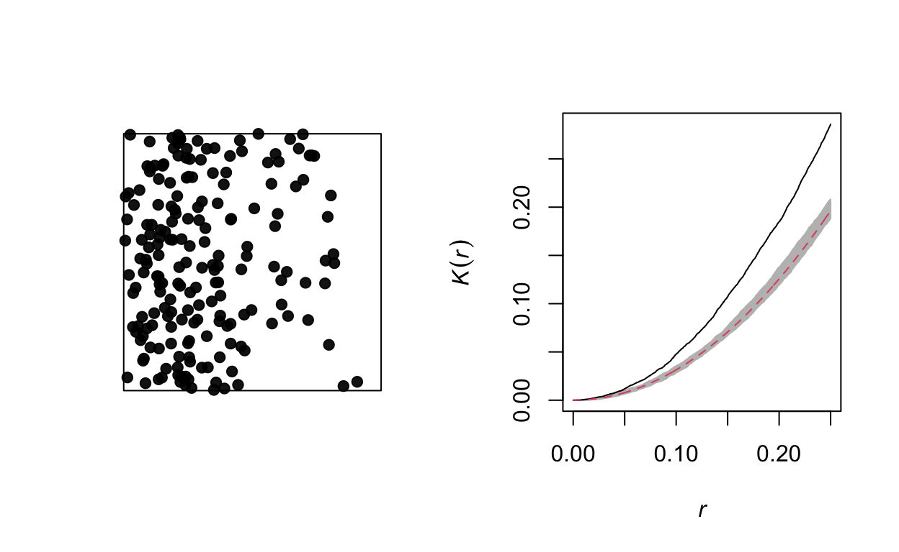
A density gradient can be confused with an aggregation of points, as can be seen on the graph of the corresponding Ripley’s \(K\). In theory, these are two different processes:
Heterogeneity: The density of points varies in the study area, for example due to the fact that certain local conditions are more favorable to the presence of the species of interest.
Aggregation: The mean density of points is homogeneous, but the presence of one point increases the presence of other points in its vicinity, for example due to positive interactions between individuals.
However, it may be difficult to differentiate between the two in practice, especially since some patterns may be both heterogeneous and aggregated.
Let’s take the example of the poplar seedlings from the previous exercise. The density function applied to a point pattern performs a kernel density estimation of the density of the seedlings across the plot. By default, this function uses a Gaussian kernel with a standard deviation sigma specified in the function, which determines the scale at which density fluctuations are “smoothed”. Here, we use a value of 2 m for sigma and we first represent the estimated density with plot, before overlaying the points (add = TRUE means that the points are added to the existing plot rather than creating a new plot).
To measure the aggregation or repulsion of points in a heterogeneous pattern, we must use the inhomogeneous version of the \(K\) statistic (Kinhom in spatstat). This statistic is still equal to the mean number of neighbours within a radius \(r\) of a point in the pattern, but rather than standardizing this number by the overall intensity of the pattern, it is standardized by the local estimated density. As above, we specify sigma = 2 to control the level of smoothing for the varying density estimate.
plot(Kinhom(semis_split[[2]], sigma = 2, correction = "iso"))

Taking into account the heterogeneity of the pattern at a scale sigma of 2 m, there seems to be a deficit of neighbours starting at a radius of about 1.5 m. We can now check whether this deviation is significant.
As before, we use envelope to simulate the Kinhom statistic under the null model. However, the null model here is not a homogeneous Poisson process (CSR). It is instead a heterogeneous Poisson process simulated by the function rpoispp(dens_p), i.e. the points are independent of each other, but their density is heterogeneous and given by dens_p. The simulate argument of the envelope function specifies the function used for simulations under the null model; this function must have one argument, here x, even if it is not used.
Finally, in addition to the arguments needed for Kinhom, i.e. sigma and correction, we also specify nsim = 199 to perform 199 simulations and nrank = 5 to eliminate the 5 most extreme results on each side of the envelope, i.e. the 10 most extreme results out of 199, to achieve an interval containing about 95% of the probability under the null hypothesis.
khet_p <- envelope(semis_split[[2]], Kinhom, sigma = 2, correction = "iso",
nsim = 199, nrank = 5, simulate = function(x) rpoispp(dens_p))
Generating 199 simulations by evaluating function ...
1, 2, 3, 4.6.8.10.12.14.16.18.20.22.24.26.28.30.32.34.36
.38.40.42.44.46.48.50.52.54.56.58.60.62.64.66.68.70.72
.74.76.78.80.82.84.86.88.90.92.94.96.98.100.102.104.106.108
.110.112.114.116.118.120.122.124.126.128.130.132.134.136.138.140.142.144
.146.148.150.152.154.156.158.160.162.164.166.168.170.172.174.176.178.180
.182.184.186.188.190.192.194.196.198 199.
Done.plot(khet_p)
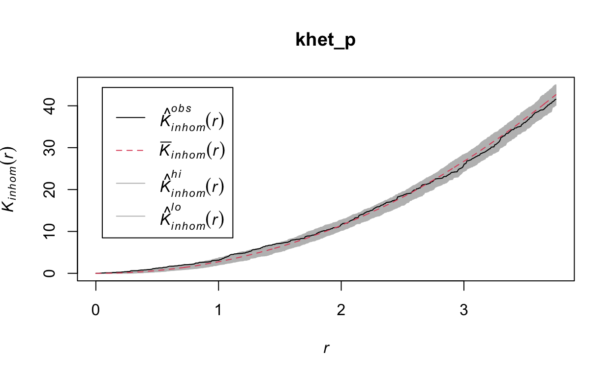
Note: For a hypothesis test based on simulations of a null hypothesis, the \(p\)-value is estimated by \((m + 1)/(n + 1)\), where \(n\) is the number of simulations and \(m\) is the number of simulations where the value of the statistic is more extreme than that of the observed data. This is why the number of simulations is often chosen to be 99, 199, etc.
Exercise 2
Repeat the heterogeneous density estimation and Kinhom calculation with a standard deviation sigma of 5 rather than 2. How does the smoothing level for the density estimation influence the conclusions?
To differentiate between a variation in the density of points from an interaction (aggregation or repulsion) between these points with this type of analysis, it is generally assumed that the two processes operate at different scales. Typically, we can test whether the points are aggregated at a small scale after accounting for a variation in density at a larger scale.
Relationship between two point patterns
Let’s consider a case where we have two point patterns, for example the position of trees of two species in a plot (orange and green points in the graph below). Each of the two patterns may or may not present an aggregation of points.
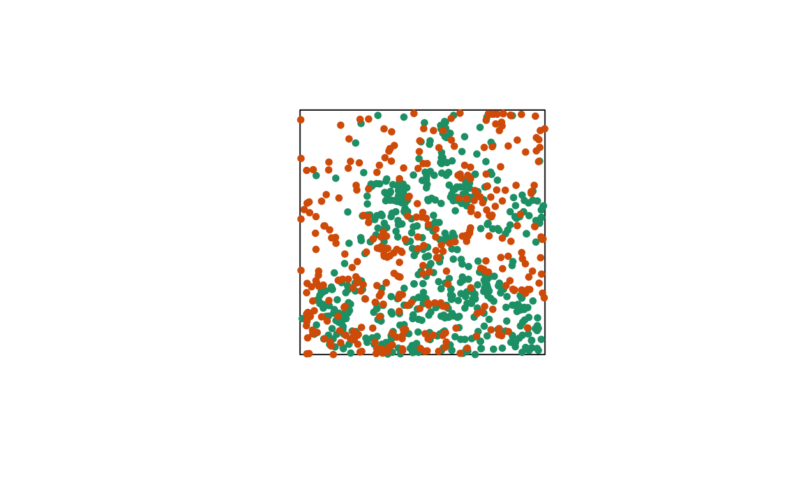
Regardless of whether points are aggregated at the species level, we want to determine whether the two species are arranged independently. In other words, does the probability of observing a tree of one species depend on the presence of a tree of the other species at a given distance?
The bivariate version of Ripley’s \(K\) allows us to answer this question. For two patterns noted 1 and 2, the function \(K_{12}(r)\) calculates the mean number of points in pattern 2 within a radius \(r\) from a point in pattern 1, standardized by the density of pattern 2.
In theory, this function is symmetrical, so \(K_{12}(r) = K_{21}(r)\) and the result would be the same whether the points of pattern 1 or 2 are chosen as “focal” points for the analysis. However, the estimation of the two quantities for an observed pattern may differ, in particular because of edge effects. The variance of \(K_{12}\) and \(K_{21}\) between simulations of a null model may also differ, so the null hypothesis test may have more or less power depending on the choice of the focal species.
The choice of an appropriate null model is important here. In order to determine whether there is a significant attraction or repulsion between the two patterns, the position of one of the patterns must be randomly moved relative to that of the other pattern, while keeping the spatial structure of each pattern taken in isolation.
One way to do this randomization is to shift one of the two patterns horizontally and/or vertically by a random distance. The part of the pattern that “comes out” on one side of the window is attached to the other side. This method is called a toroidal shift, because by connecting the top and bottom as well as the left and right of a rectangular surface, we obtain the shape of a torus (a three-dimensional “donut”).

The graph above shows a translation of the green pattern to the right, while the orange pattern remains in the same place. The green points in the shaded area are brought back on the other side. Note that while this method generally preserves the structure of each pattern while randomizing their relative position, it can have some drawbacks, such as dividing point clusters that are near the cutoff point.
Let’s now check whether the position of the two species (birch and poplar) is independent in our plot. The function Kcross calculates the bivariate \(K_{ij}\), we must specify which type of point (mark) is considered as the focal species \(i\) and the neighbouring species \(j\).
plot(Kcross(semis, i = "P", j = "B", correction = "iso"))
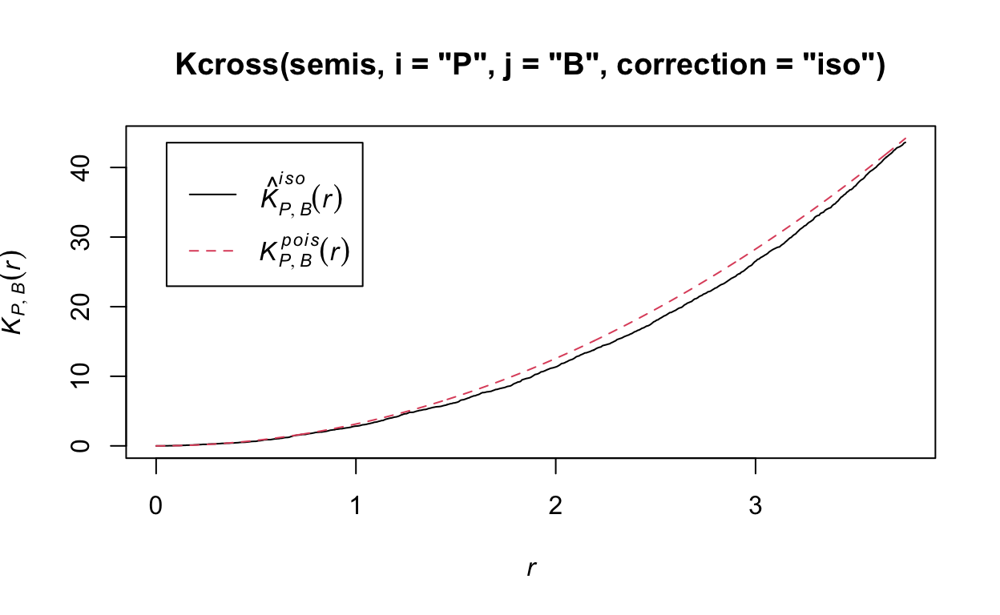
Here, the observed \(K\) is lower than the theoretical value, indicating a possible repulsion between the two patterns.
To determine the envelope of the \(K\) under the null hypothesis of independence of the two patterns, we must specify that the simulations are based on a translation of the patterns. We indicate that the simulations use the function rshift (random translation) with the argument simulate = function(x) rshift(x, which = "B"); here, the x argument in simulate corresponds to the original point pattern and the which argument indicates which of the patterns is translated. As in the previous case, the arguments needed for Kcross, i.e. i, j and correction, must be repeated in the envelope function.
plot(envelope(semis, Kcross, i = "P", j = "B", correction = "iso",
nsim = 199, nrank = 5, simulate = function(x) rshift(x, which = "B")))
Generating 199 simulations by evaluating function ...
1, 2, 3, 4.6.8.10.12.14.16.18.20.22.24.26.28.30.32.34.36
.38.40.42.44.46.48.50.52.54.56.58.60.62.64.66.68.70.72
.74.76.78.80.82.84.86.88.90.92.94.96.98.100.102.104.106.108
.110.112.114.116.118.120.122.124.126.128.130.132.134.136.138.140.142.144
.146.148.150.152.154.156.158.160.162.164.166.168.170.172.174.176.178.180
.182.184.186.188.190.192.194.196.198 199.
Done.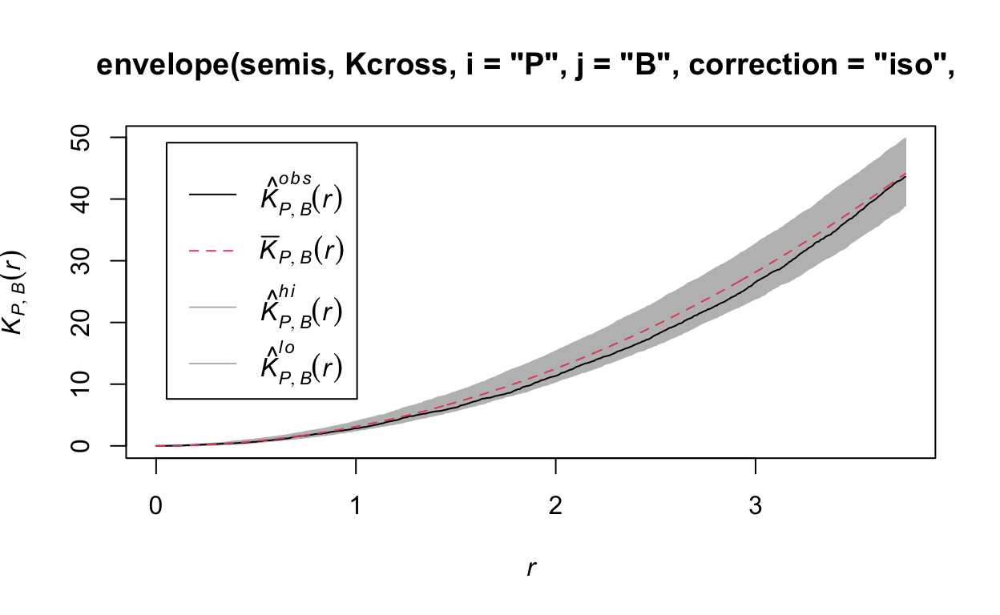
Here, the observed curve is totally within the envelope, so we do not reject the null hypothesis of independence of the two patterns.
Questions
What would be one reason for our choice to translate the points of the birch rather than poplar?
Would the simulations generated by random translation be a good null model if the two patterns were heterogeneous?
Marked point patterns
The fir.csv dataset contains the \((x, y)\) coordinates of 822 fir trees in a 1 hectare plot and their status (A = alive, D = dead) following a spruce budworm outbreak.
x y status
1 31.50 1.00 A
2 85.25 30.75 D
3 83.50 38.50 A
4 84.00 37.75 A
5 83.00 33.25 A
6 33.25 0.25 Afir <- ppp(x = fir$x, y = fir$y, marks = as.factor(fir$status),
window = owin(xrange = c(0, 100), yrange = c(0, 100)))
plot(fir)
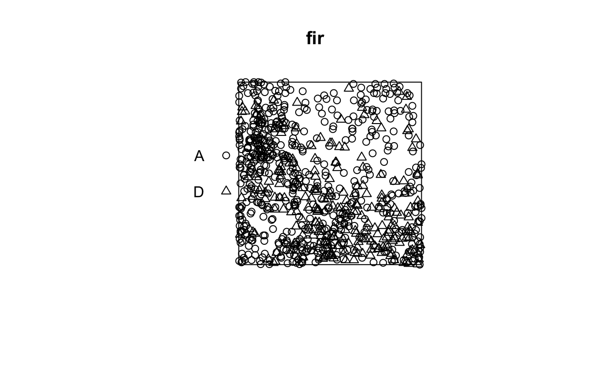
Suppose that we want to check whether fir mortality is independent or correlated between neighbouring trees. How does this question differ from the previous example, where we wanted to know if the position of the points of two species was independent?
In the previous example, the independence or interaction between the species referred to the formation of the pattern itself (whether or not seedlings of one species establish near those of the other species). Here, the characteristic of interest (survival) occurs after the establishment of the pattern, assuming that all those trees were alive at first and that some died as a result of the outbreak. So we take the position of the trees as fixed and we want to know whether the distribution of status (dead, alive) among those trees is random or shows a spatial pattern.
In Wiegand and Moloney’s textbook, the first situation (establishment of seedlings of two species) is called a bivariate pattern, so it is really two interacting patterns, while the second is a single pattern with a qualitative mark. The spatstat package in R does not differentiate between the two in terms of pattern definition (types of points are always represented by the marks argument), but the analysis methods applied to the two questions differ.
In the case of a pattern with a qualitative mark, we can define a mark connection function \(p_{ij}(r)\). For two points separated by a distance \(r\), this function gives the probability that the first point has the mark \(i\) and the second the mark \(j\). Under the null hypothesis where the marks are independent, this probability is equal to the product of the proportions of each mark in the entire pattern, \(p_{ij}(r) = p_i p_j\) independently of \(r\).
In spatstat, the mark connection function is computed with the markconnect function, where the marks \(i\) and \(j\) and the type of edge correction must be specified. In our example, we see that two closely spaced points are less likely to have a different status (A and D) than expected under the assumption of random and independent distribution of marks (red dotted line).
plot(markconnect(fir, i = "A", j = "D", correction = "iso"))
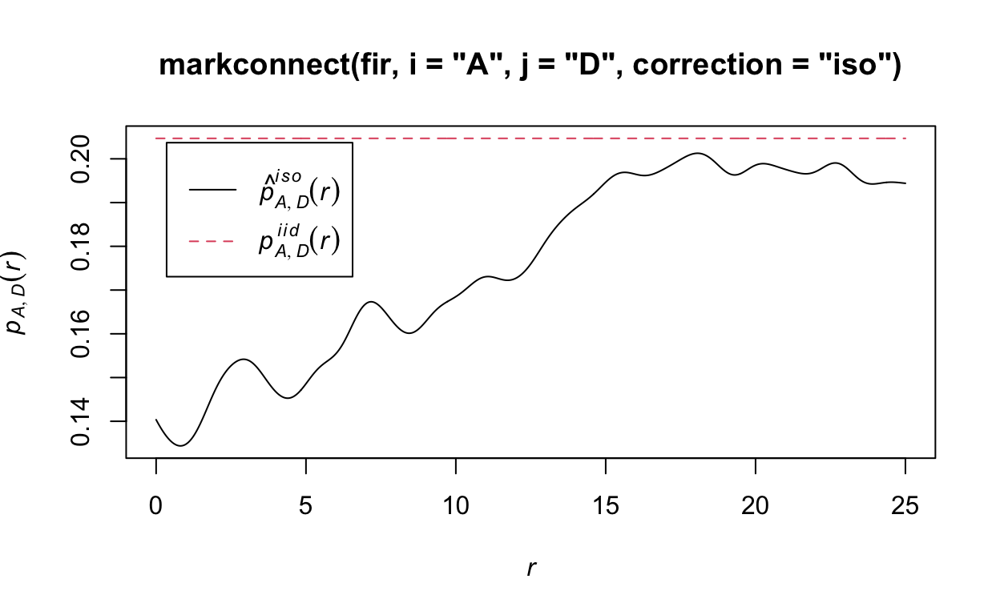
In this graph, the fluctuations in the function are due to the estimation error of a continuous \(r\) function from a limited number of discrete point pairs.
To simulate the null model in this case, we use the rlabel function, which randomly reassigns the marks among the points of the pattern, keeping the points’ positions fixed.
plot(envelope(fir, markconnect, i = "A", j = "D", correction = "iso",
nsim = 199, nrank = 5, simulate = rlabel))
Generating 199 simulations by evaluating function ...
1, 2, 3, 4.6.8.10.12.14.16.18.20.22.24.26.28.30.32.34.36
.38.40.42.44.46.48.50.52.54.56.58.60.62.64.66.68.70.72
.74.76.78.80.82.84.86.88.90.92.94.96.98.100.102.104.106.108
.110.112.114.116.118.120.122.124.126.128.130.132.134.136.138.140.142.144
.146.148.150.152.154.156.158.160.162.164.166.168.170.172.174.176.178.180
.182.184.186.188.190.192.194.196.198 199.
Done.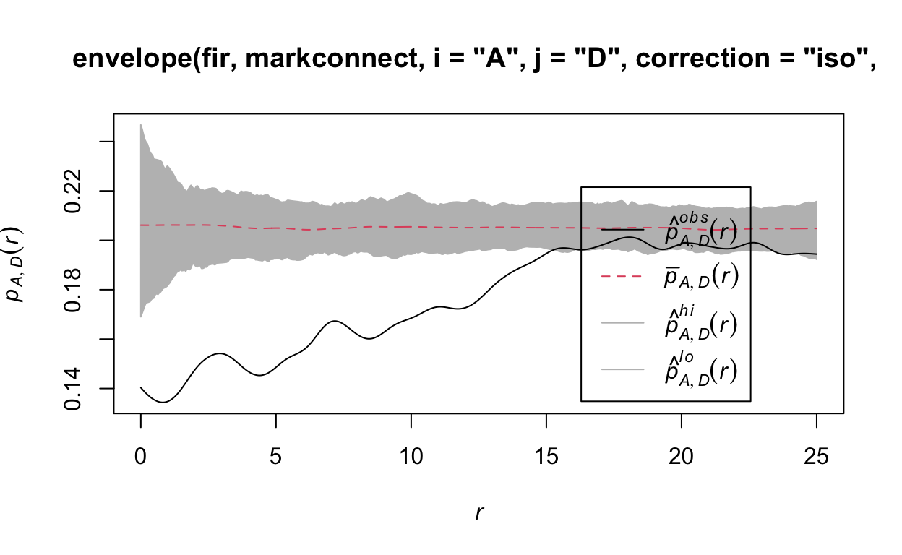
Note that since the rlabel function has only one required argument corresponding to the original point pattern, it was not necessary to specify: simulate = function(x) rlabel(x).
Here are the results for tree pairs of the same status A or D:
par(mfrow = c(1, 2))
plot(envelope(fir, markconnect, i = "A", j = "A", correction = "iso",
nsim = 199, nrank = 5, simulate = rlabel))
Generating 199 simulations by evaluating function ...
1, 2, 3, 4.6.8.10.12.14.16.18.20.22.24.26.28.30.32.34.36
.38.40.42.44.46.48.50.52.54.56.58.60.62.64.66.68.70.72
.74.76.78.80.82.84.86.88.90.92.94.96.98.100.102.104.106.108
.110.112.114.116.118.120.122.124.126.128.130.132.134.136.138.140.142.144
.146.148.150.152.154.156.158.160.162.164.166.168.170.172.174.176.178.180
.182.184.186.188.190.192.194.196.198 199.
Done.plot(envelope(fir, markconnect, i = "D", j = "D", correction = "iso",
nsim = 199, nrank = 5, simulate = rlabel))
Generating 199 simulations by evaluating function ...
1, 2, 3, 4.6.8.10.12.14.16.18.20.22.24.26.28.30.32.34.36
.38.40.42.44.46.48.50.52.54.56.58.60.62.64.66.68.70.72
.74.76.78.80.82.84.86.88.90.92.94.96.98.100.102.104.106.108
.110.112.114.116.118.120.122.124.126.128.130.132.134.136.138.140.142.144
.146.148.150.152.154.156.158.160.162.164.166.168.170.172.174.176.178.180
.182.184.186.188.190.192.194.196.198 199.
Done.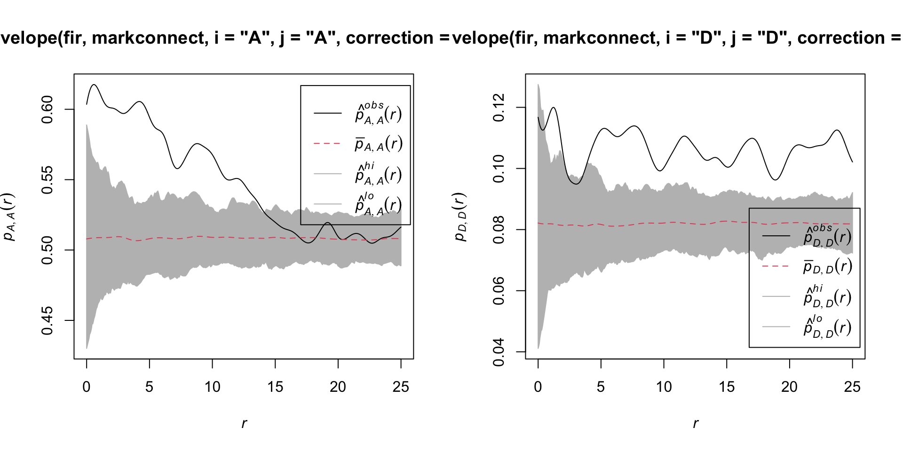
It therefore appears that fir mortality due to this outbreak is spatially aggregated, since trees located in close proximity to each other have a greater probability of sharing the same status than predicted by the null hypothesis.
References
Fortin, M.-J. and Dale, M.R.T. (2005) Spatial Analysis: A Guide for Ecologists. Cambridge University Press: Cambridge, UK.
Wiegand, T. and Moloney, K.A. (2013) Handbook of Spatial Point-Pattern Analysis in Ecology, CRC Press.
The dataset in the last example is a subet of the Lake Duparquet Research and Teaching Forest (LDRTF) data, available on Dryad here.
Solutions
Exercise 1
plot(envelope(semis_split[[2]], Kest, correction = "iso"))
Generating 99 simulations of CSR ...
1, 2, 3, 4, 5, 6, 7, 8, 9, 10, 11, 12, 13, 14, 15, 16, 17, 18, 19, 20, 21, 22, 23, 24, 25, 26, 27, 28, 29, 30, 31, 32, 33, 34, 35,
36, 37, 38, 39, 40, 41, 42, 43, 44, 45, 46, 47, 48, 49, 50, 51, 52, 53, 54, 55, 56, 57, 58, 59, 60, 61, 62, 63, 64, 65, 66, 67, 68, 69, 70,
71, 72, 73, 74, 75, 76, 77, 78, 79, 80, 81, 82, 83, 84, 85, 86, 87, 88, 89, 90, 91, 92, 93, 94, 95, 96, 97, 98, 99.
Done.
Poplar seedlings seem to be significantly aggregated according to the \(K\) function.
Exercise 2
khet_p <- envelope(semis_split[[2]], Kinhom, sigma = 5, correction = "iso",
nsim = 199, nrank = 5, simulate = function(x) rpoispp(dens_p))
Generating 199 simulations by evaluating function ...
1, 2, 3, 4.6.8.10.12.14.16.18.20.22.24.26.28.30.32.34.36
.38.40.42.44.46.48.50.52.54.56.58.60.62.64.66.68.70.72
.74.76.78.80.82.84.86.88.90.92.94.96.98.100.102.104.106.108
.110.112.114.116.118.120.122.124.126.128.130.132.134.136.138.140.142.144
.146.148.150.152.154.156.158.160.162.164.166.168.170.172.174.176.178.180
.182.184.186.188.190.192.194.196.198 199.
Done.plot(khet_p)

Here, as we estimate density variations at a larger scale, even after accounting for this variation, the poplar seedlings seem to be aggregated at a small scale.